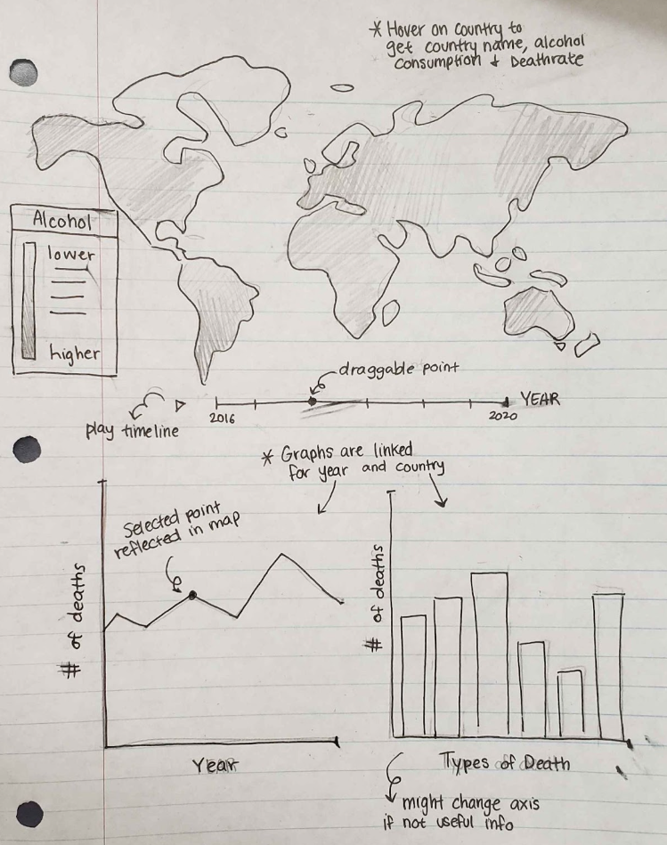
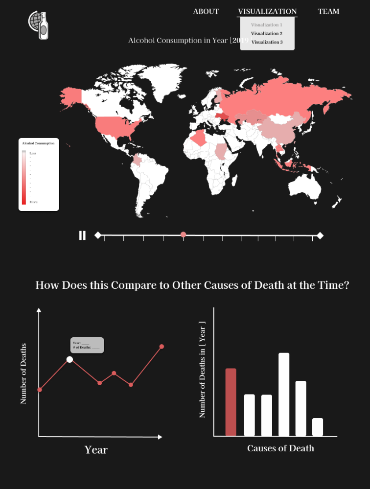
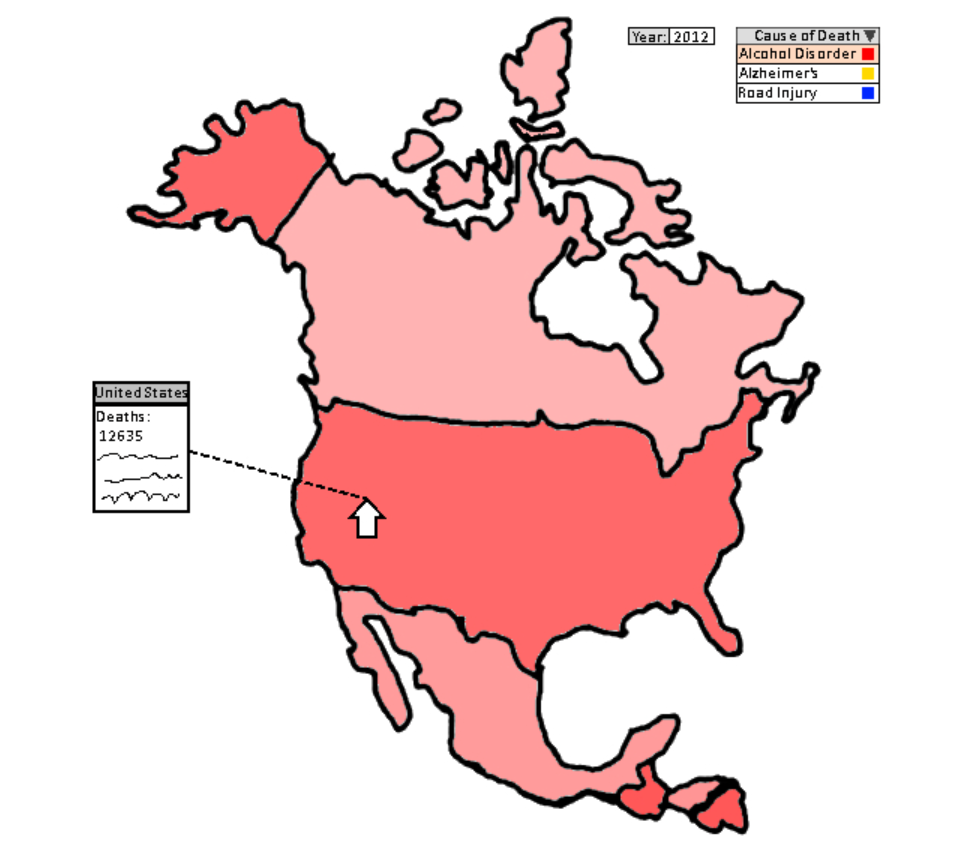
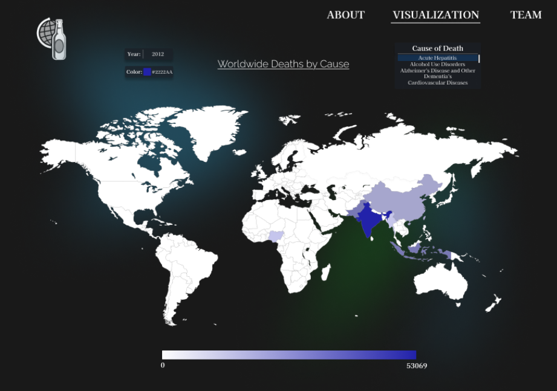
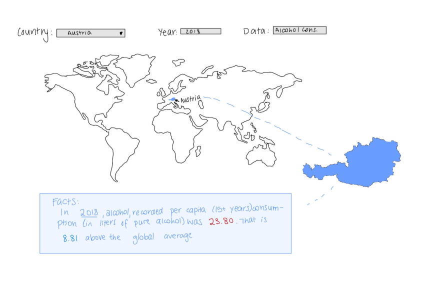
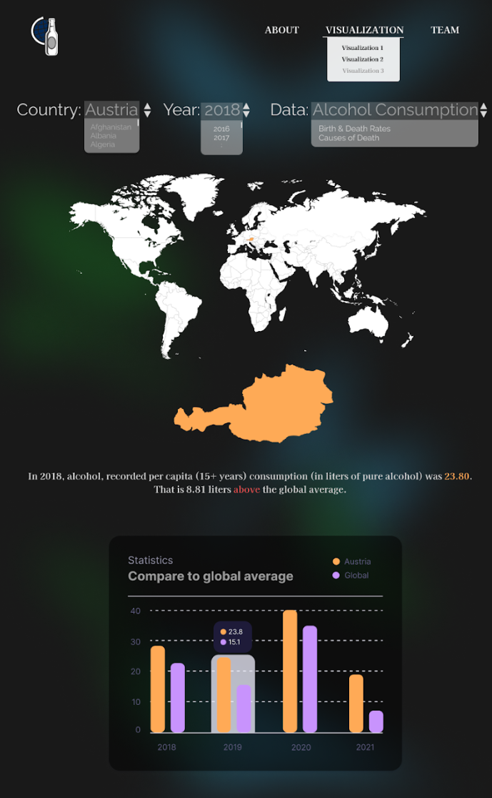

Mackenzie Chung, Debbie Engelberg, Noam Reiner, Cameron Sherman
Project-long Course Project as part of COSI 116A: Information Visualization, taught by Prof. Dylan Cashman, Brandeis University.
Alcohol consumption is a significant global health concern, often cited as a leading risk factor for numerous medical conditions and social issues. From a young age, we are taught about the dangers of excessive drinking and its potential to lead to addiction, liver disease, mental health disorders, and even premature death. Yet, the true scope of its impact on global mortality and its comparison to other leading causes of death is often less understood. This gap in understanding inspired our team to delve deeper into the correlation between alcohol consumption and death rates worldwide.
We set out to answer critical questions: How does alcohol-related mortality compare to other common causes of death? Is the narrative around alcohol consumption's dangers as dire as parents and educators suggest? Additionally, how do these risks vary across different countries and over time? To address these questions, we created a series of visualizations aimed at individuals of all backgrounds who are curious about the broader effects of alcohol consumption.
Our visualizations allow users to explore data on alcohol consumption, death rates, birth rates, and causes of death interactively. Users can observe patterns across different years and regions, enabling them to draw informed conclusions. Through this experience, we hope to provide valuable insights into the complex and often overlooked impact of alcohol on global health.
The video below walks through the process of creating our project: From planning out what issues we aim to research and tackle,
to gathering the data and drafting up sketches for our final designs. It also shows the final product of our visualizations and how users can interact with them.
**The actual demonstration for each visualization starts at 5:16.
There are 3 different visualizations that users can explore which are all found under the drop-down menu for "Visualizations:
For the data cleaning we used Python's Panadas library. We combined four datasets: one on causes of death and three on alcohol consumption. For the cause of death data, we cleaned unnecessary columns, filled null cells, added a total count column, and standardized data types. The alcohol consumption datasets were reformatted and aligned, ensuring consistency for merging. After integrating the datasets by year and country. For interaction with the Json of the map, we added alpha-2 countries codes.
Link to data cleaning: Google Colab
Here are the following tasks that our team prioritized:
Each team member drafted 2 ideas to contribute, and as a team, we went through all our ideas and chose our top 3 visualizations. After drawing them out more precisely, we decided to incorporate all 3 options into our final project. While working on the visualizations, we've encountered a lot of difficulties with using the D3 library, but eventually figured out how to code out bits and parts of our visualizations.
Visualization 1: Brushing & Linking
 Visualization 2: Deaths by Cause with Zooming & Panning
 Visualization 3: Individual Country Facts
 At the end of our project, we were able to somewhat recreate our top 3 visualization sketches and successfully connected the datasets to our maps and graphs. For visualization 1 (Brushing & Linking), all the main components were implemented, including the timeline slider, the line chart, and the bar graph -- However, the style for the slider and legend was a bit off from the original sketch. It also got a bit messy when figuring out how to connected the slider to the map, line chart, and bar graph. Visualization 2 (Causes of Death Across Countries with Zooming and Panning) was also implemented with the map, dropdowns, and legend, and closley matched the original sketch. The programmer for visualization 2 also added the ability to zoom in and out, making the map more interactive. But although interactive, the layout of the page can vary depending on the size of the screen which may lead to inconsistencies with objects overlapping. In visualization 3, it also uses the map and dropdowns for the user to select a country and year, and displayed the data below the map. And similar to visualization 3, the layout of the page can vary depending on the size of the screen or browser (as noticed by one of our team member). Our UI was also close to how we had envisioned in our sketches, but we also realized that the background can make reading the map a bit more challenging so we'll take that into acount for future projects. Overall, the created project was a big sucess, but there are definitely still areas for improvement.